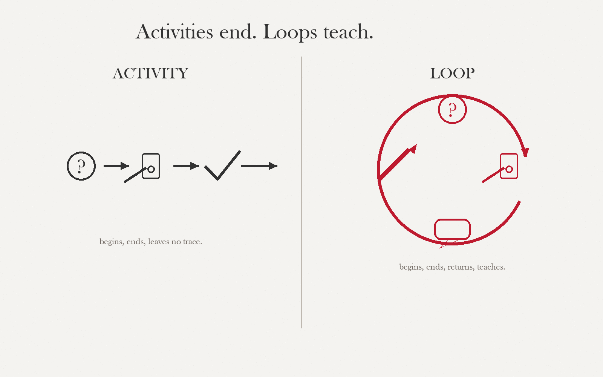

By the end of this session, you can…
- LO 1.1 Distinguish a learning game from three adjacent things — a game with educational content, a gamified worksheet, and a simulation — using the engagement–transfer test.
- LO 1.2 Name the three failure modes of gamification — reward substitution, competition flattening, and narrative capture — and identify which is operating in a given artifact.
- LO 1.3 State, in one sentence, the engagement–transfer problem your own project must solve.
- LO 1.4 Commit to one of three stance questions as a framing for your capstone project.
The engagement–transfer problem
A game can be deeply engaging and teach nothing. A worksheet can teach a great deal and engage no one. Educational game design is the discipline of refusing both failure modes simultaneously.

Most projects that fail do not fail because they were boring, and do not fail because the content was wrong. They fail because the mechanic that drove engagement did not carry the learning. The learner mastered the scoring system, not the domain. This is the engagement–transfer problem, and it is the central puzzle of everything that follows.
A learning game is an interactive artifact in which the moment-to-moment decisions the player makes to succeed in the game are the same decisions a competent practitioner makes in the target domain. If those two sets of decisions diverge, you are building something else.
The three failure modes
Reward substitution
Players optimize the reward shell (points, streaks, stars) instead of the underlying domain behavior. Stripping rewards returns performance to baseline.
Competition flattening
Leaderboards and timers push every learner toward the same dominant strategy — usually the one with lowest cognitive load. Variety of reasoning collapses.
Narrative capture
Beautifully-themed wrapper, mechanically thin inside. Players remember the world, not the decisions. Transfer to the real domain is near zero.
Four things that look alike
Not everything interactive-and-educational is a learning game. Being precise about the category you are working in saves months of misdirected effort. Read the table, then argue about the edge cases.
| Category | Loop driver | What is actually being practiced | Typical failure mode |
|---|---|---|---|
| Game with educational content |
Traditional game loop; facts appear as theme. | The game's own skills — shooting, platforming, matching. | Narrative capture. |
| Gamified worksheet | Extrinsic reward loop (points, badges, timers). | Completion behavior; same task as the worksheet. | Reward substitution. |
| Simulation | Causal model of a real system; no explicit win state. | Mental model of system dynamics — often without feedback on correctness. | Open-ended; learner builds the wrong model unseen. |
| Learning game | Goal + constraint + feedback; decisions are domain decisions. | The target competency itself. | — (the one we are trying to build) |
The row you sit in determines everything downstream: which objectives are legitimate, which mechanics are available, what counts as evidence of learning. A project that doesn't know its row produces confused artifacts.
The same topic, three artifacts
"Interpreting a pediatric vital-signs trend" — how the same content yields three very different artifacts depending on which category you pick.
Trauma Rescue! (arcade shooter with medical theme)
- Loop
- Shoot incoming pathogens. Between waves, a vitals chart scrolls past.
- Player learns
- How to aim and dodge. Vitals are visual noise.
- Verdict
- Engagement: high. Transfer: ~zero. Classic narrative capture.
VitalsQuiz (multiple choice + points + streak)
- Loop
- Read a scenario, pick an answer, earn points. Streak for consecutive correct.
- Player learns
- Which answer looks right. Pattern-matches on surface features of the question stem.
- Verdict
- Transfer limited to recognition, not judgment. Reward substitution: players chase streaks.
The On-Call (branching decision game, hidden variables)
- Loop
- You are the resident on night shift. You can order one test, call one consultant, or wait and observe. Time advances; the patient's state — not just the numbers — shifts.
- Player learns
- To prioritize which information is worth the cost of getting; to tolerate uncertainty; to recognize patterns across cases.
- Verdict
- Decisions in the game are decisions in the domain. Transfer designed in, not hoped for.
"Teach" or "is about"? Call it.
Eight real learning-game pitches. For each, decide whether the verb the designer chose puts them inside the trap or outside it. No partial credit; no "it depends." Commit, read the feedback, move on.
Framing check · teach vs. is-about
~3 min · click to answerEach pitch is a real-world sentence a designer might write in a grant application. Pick the frame that most accurately describes what the sentence is actually committing to. Answers lock on first click.
What the engagement–trap looks like in practice
A thirty-second walk-through of a prototype that tested beautifully on engagement metrics and transferred nothing. Watch for the three failure modes appearing in order.
Triangulate a game you have played
Pairs. Pick a game (digital or analog) that someone called "educational." Classify it against the four-row table above. Defend your placement; a neighbor pair will challenge it.
| Time | What happens | Facilitator cue |
|---|---|---|
| 00:00–05:00 | Solo: pick game; jot loop + what it teaches. | "One game. Five minutes. Written, not spoken." |
| 05:00–15:00 | Pair: classify against table; write your category choice on a sticky. | Roam; ask "Which row?" not "Is it good?" |
| 15:00–30:00 | Adjacent pairs swap; challenge each other's category. | Listen for the word "but" — the real disagreement. |
| 30:00–45:00 | Whole group: three pairs present. Map the disagreements. | Capture disagreements on a board; do not resolve them. |
Do not rank the games "good / bad." Do not declare a winning category. The point is to make the category choice visible and defensible. Projects that skip this step invariably build Version A while believing they are building Version C.
A handout that pairs with this week
Open this when you want concrete examples alongside the framing we've built. The casebook gives you six annotated educational-game concepts to argue about — exactly the kind of material that makes the "teach vs. is-about" distinction stop being abstract.
Worked Examples Casebook
Six educational-game concepts (fractions market, ancient-city council, watershed sim, inclusive-classroom sim, customer-service navigator, lab-safety triage) annotated with loop, facilitation, risks, and revisions. Use it to stress-test the vocabulary from today.
Why this week The cases make concrete what "teach" vs. "is-about" means in practice. Bring a challenge to Session 02: pick one case and argue whether its frame holds up.
Arrive next week with these in hand
Check each item as you complete it — your progress is saved locally. Session 02 is the first deliverable (the Design Problem Statement) so the groundwork matters.
Where you start.
Rate yourself honestly against the eight skill areas this microcredential develops. Use the full scale — a zero here is not a problem, it is a starting point. You will rate the same eight areas again in Session 12 so the cohort can see the shape of growth, not individual scores. Saved to this browser and emitted as xAPI so analytics.html can render the cohort growth chart.
Designing learning experiences grounded in learner analysis, measurable objectives, iteration.
Designing formative and summative assessments aligned to stated outcomes.
Producing low-fidelity prototypes for rapid user testing and iteration.
Observing, interviewing, and recruiting learners; separating observation from interpretation.
Writing hand-off-ready technical specs a non-author could implement.
Designing against UDL multiple means; naming excluded populations.
Responding to feedback, logging revisions, declining scope with reasons.
Interpreting learner data — not chasing vanity metrics — to drive revision.
Scale · 0 never done this · 1 tried once · 2 can do with guidance · 3 can do independently · 4 can teach it
Before you move on…
Four questions on this session's concepts. Choices lock on first click — formative only.
The one-sentence commitment
Pick one of the three stance questions. Answer it in a single sentence — no hedges, no "might." This is a commitment, not a hypothesis; you will revise it formally in Session 03, but you need a stake in the ground now. Saved automatically to this browser.
a) My game will help whom do what, differently than they do today?
b) What decision does a competent practitioner make that my learner cannot yet make?
c) Where is my learner currently failing, and what kind of practice would move them?
Your answer is saved to this browser's local storage. It will not leave this device.